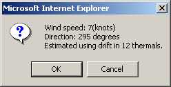

IGCview Tools Help
(close this window)IGCview Tools Help
(close this window)
IGCview Tools Help
(close this window)IGCview Tools Help
(close this window)The tools button loads a variety of useful buttons down the left side of the page.
The left-side tools buttons which currently appear are:
 |
Tools Help. That button shows this help information. |
 |
Turnpoint detail. Shows a special map view with detail view of each turnpoint. It seemed like a good idea at the time, but the mouse drag 'zoom box' makes it pretty easy to zoom in to turnpoint detail anyway. |
 |
Ruler. Click this button and then drag the mouse on the map to draw a ruler to measure distances and view latitude and longitude at any point. |
 |
Calculate/Set Wind.
IGCview will use the drift in thermals to calculate the wind direction and speed. All thermals longer
than three minutes in all the currently selected primary and secondary logs will be used for the
calculation. At the moment it doesn't matter if you click 'OK' or 'Cancel'. In a later release the
wind will be used to adjust the 'AvgCruise' speeds displayed in the
 'Flight Info' window and the
speed bars on the
'Flight Info' window and the
speed bars on the
 cruise speed chart.
cruise speed chart. |
 |
Scoring data. |
Split primary log.
You can click on the map near any log point to set the 'cursor' to that point in the
primary log. If you then click this 'split' button, the current loaded log will be
split into two logs at the current cursor point, with the first half set as the new 'primary',
and the second half set as a new secondary. You will see the new two logs listed when you
click the  'select tracks' button. If the original log
was called 'B21' then the two new logs will be 'B21_1' and 'B21_2'. 'select tracks' button. If the original log
was called 'B21' then the two new logs will be 'B21_1' and 'B21_2'.
| |
 |
Set preferences.
Here you can set your preferences for the turnpoint file to be loaded at startup, the units (e.g.
miles, kilometers) to be used for distances, speeds, etc, and various other things. These settings
will be saved when you click the 'Use these settings' option on the preferences window menu. The
startup latitude, longitude and scale settings can also be set in the preferences window, but note
that the easiest way to set these values is to zoom the map window to the preferred location and
scale before clicking the button, so those values
will be pre-loaded into the appropriate fields when the preferences window opens.
|
| IGCview version. |